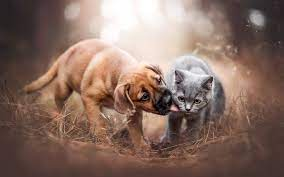

Ayuda a un Peludo es una organización sin fines de lucro, dedicada al rescate, rehabilitación y reubicación de Perros abandonados. Realizamos, operativos de esterilización y jornadas de adopción todas las semanas. Todos los perros que entrega están esterilizados desde los dos meses de edad. Mantiene dos albergues de gatos y una red de hogares temporales, que acogen a los gatos rescatados en espera de su adopción definitiva.
Perros en adopción
Pedro

Juan
Diego